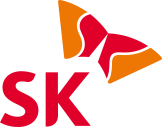

설립연도
1953년 (선경직물에서 출발)

SK그룹의 맨 위에 있는 지주회사예요. 정유·배터리(SK이노베이션), 통신(SK텔레콤), 반도체 투자(SK스퀘어 → SK하이닉스), 바이오 등 여러 계열사의 최대주주로서 그룹 전체의 투자 방향을 정해요. 계열사 실적을 합쳐서 공시하기 때문에 매출이 아주 크게 잡혀요.
칸에 마우스를 올리거나 누르면 자세한 설명을 볼 수 있어요.
자회사 SK이노베이션은 원유를 정제해 휘발유·경유를 만들고, 석유화학 제품과 전기차 배터리(SK온)도 만들어요. SK 전체 매출의 대부분이 여기서 나와요. 2024년에는 액화천연가스(LNG)·전력 회사 SK E&S와 합쳤어요.
대표 예SK이노베이션, SK에너지, SK온, SK E&S
이동통신 SK텔레콤과, SK하이닉스의 최대주주인 SK스퀘어를 거느려요. SK하이닉스의 실적이 좋아지면 SK의 기업 가치도 함께 올라가요.
대표 예SK텔레콤, SK스퀘어, SK하이닉스(손자회사)
SK㈜ 안의 사업 부문인 SK AX(2025년 SK C&C에서 이름 변경)가 기업과 공공기관에 AI·클라우드·IT 시스템을 만들어 주고 운영해 줘요.
대표 예SK AX, 기업용 AI·클라우드 구축
뇌전증 신약을 미국에서 직접 파는 SK바이오팜 같은 바이오 회사와, AI·에너지 등 새 사업에 투자해요.
대표 예SK바이오팜, 신사업 투자
| 기간 | 매출 | 영업이익 | 순이익 |
|---|
SK는 지주회사라서 SK이노베이션·SK텔레콤 같은 자회사들의 매출이 모두 합쳐져 나와요. 그래서 매출 대부분이 정유·에너지 사업에서 나오고, 유가에 따라 크게 움직여요.
사업마다 겨루는 상대가 달라요